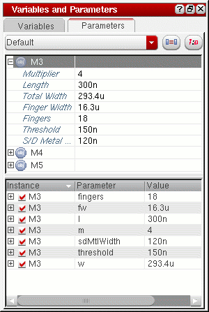
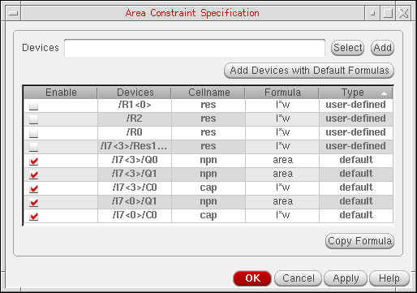
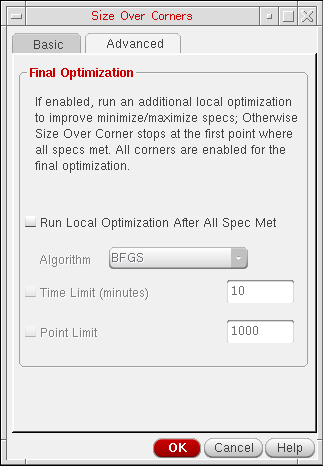

24
Circuit Optimization
You can parameterize a design for sizing and optimization using variables. In addition, you can also use a parameterization flow in ADE Assembler. To use this flow, you can parameterize a design and set specifications, then perform a local or global optimization and backannotate the results of the optimization.
This chapter covers the following tasks:
- Parameterizing the Design
- Setting Up Specifications
- Running Optimization
- Sizing Over Corners
- Performing Manual Tuning
Parameterizing the Design
When you parameterize the design for optimization, you capture the critical device relationships in the circuit. For example, the input transistors of an opamp must be matched, and the transistors of a current mirror must be ratioed. In order to run optimization, you must define a range of legal values for optimization for each transistor that is the “master” in a matching relationship.
To begin parameterizing the design.
Matching Devices and Device Properties
You have three options for matching. You can match all device properties for a device, or you can match only specific properties. You can also ratio-match. When you’re finished specifying device relationships, you can define legal values for device properties.
Matching Devices
-
Select the devices you want to match in the schematic.
The devices are listed on the upper half of the Parameters tab of the Variables and Parameters assistant pane. - In the Parameters tab, select the device you want as the “master device.” The master device is the device that all the other selected devices will match.
-
Click the Match Parameters
button.
The matched parameters appear in the lower half of the Parameters tab of the Variables and Parameters assistant pane.
You can now modify the values of matched parameters to vary them during the optimization process.
Matching Device Properties
To match specific device properties:
-
In the schematic, click the devices for which you want to match properties.
As you click, each device and its parameters appear on the upper half of the Parameters tab of the Variables and Parameters assistant pane. - Ensure that Default is selected in the drop-down list on the upper half of the Parameters tab of the Variables and Parameters assistant pane.
-
Click the + sign next to a device with whose properties you want to match the properties of other devices.
The list of properties for the device appears, as well as the schematic value of each property.
- Select the property you want to match.
-
Click the Match Parameters
button.
The matched parameters appear in the lower half of the Parameters tab.

You can now modify the values of matched parameters to vary them during the optimization process.
Ratio-Matching Device Properties
To ratio-match specific device properties:
-
In the schematic, click the devices for which you want to ratio-match properties.
As you click, each device and its parameters appear on the upper half of the Parameters tab of the Variables and Parameters assistant pane. - Ensure that Default is selected in the drop-down list on the upper half of the Parameters tab of the Variables and Parameters assistant pane.
-
Click the + sign next to a device with whose parameters you want to ratio-match the parameters of other devices.
- Select the parameters you want to ratio-match.
-
Click the Ratio Matched Parameters
 button.
button.
ADE Assembler automatically ratios the parameters based on the lowest value.
The ratio-matched parameters appear in the lower half of the Parameters tab.
You can now modify the values of ratio-matched parameters to vary them during the optimization process.
Defining Values for Optimization
To define a legal range of values for devices:
-
In the schematic, click the devices for which you want to specify values.
As you click, each device and its parameters appear on the upper half of the Parameters tab of the Variables and Parameters assistant pane. - Ensure that Default is selected in the drop-down list on the upper half of the Parameters tab of the Variables and Parameters assistant pane.
-
Click the + sign next to a device whose parameters you want to modify for optimization.
The list of parameters for the device appears, as well as the schematic value of each property.
-
Click the value for the parameters you want to modify and type a range or list of values. Specify ranges in the format
MIN:STEP:MAX. You can separate a list of values with either commas or spaces.
The modified parameters appear in the lower half of the Parameters tab.
Setting Up Specifications
When you set specifications on outputs, you establish the performance specifications that ADE Assembler must meet during synthesis. These specifications are used as benchmarks for candidate circuit quality during optimization.
You can set up general specifications, area constraint specifications and operating region specifications. For more information, see the following topics:
General Specifications
For each specification, you specify an objective, or performance constraint, then specify a target value for that specification.
Objective Types
There are five types of objectives:
An open-ended specification is when you choose either minimize (min) or maximize (max), then specify an ideal value. For an open-ended specification, ADE Assembler tries to continually improve upon the ideal value. So, if the ideal value for the ugf specification is maximize to 1e+8, 3e+8 is better than 2e+8.
A close-ended specification is when you specify a target value, then specify that the resulting specification must be greater than (>) or less than (<) that target value. For a close-ended specification, ADE Assembler attempts to meet the target value, and exceeding the target is no better than meeting the target. So, if the target value for ugf is >1e+8, 3e+8 is no better than 2e+8.
You can also specify a range specification, in which you specify both an upper and a lower boundary for the target value. For a tolerance (tol) specification, you specify a target value and an allowable percentage deviation.
The optimizer treats the range and tolerance specs as closed-ended unless all the specifications are met. When all the specifications are met, range and tolerance are treated as open-ended. When all the specifications are met and the all specs met stopping criteria has not been specified, the optimizer continues to prefer the values closer to the midpoint of the range or tolerance target value.
You can specify an info specification when you want to see the value of a measurement, but do not want that specification to affect sizing.
Design specifications might include specifying an open loop gain maximized with an acceptable value of 60dB, or a settling time < 15ns.
Specification Weights
ADE Assembler supports weighing on specifications, that is, the ability to put particular emphasis on one or more specifications. You may use weighing if you have certain important specifications, and it is imperative that ADE Assembler meet those specifications, even at the expense of other specifications. Or, if you have run ADE Assembler without any specification weights, and you have one particular specification that is not being met, you can put emphasis on that specification in order to ensure that ADE Assembler meets it.
To set specification weighing, you specify a positive integer as the “weight.” ADE Assembler multiplies the cost function for that specification by the integer specified for the weight. Because this specification is now “x” times more important than other specifications, it changes the way ADE Assembler searches the design space. ADE Assembler will put particular stress on meeting that specification, even at the expense of specifications weighted at “1.” This discrepancy is especially true of specifications that are minimized or maximized, because ADE Assembler is already working harder to optimize the value for that specification.
In general, ADE Assembler is able to find a working solution without specification weighing. As a result, Cadence advises that you run ADE Assembler first with all specifications weights set to “1.” If ADE Assembler is repeatedly unable to meet a particular specification, you can put more emphasis on meeting that specification using specification weighing.
Setting Up Specifications
-
In the Outputs Setup tab, double-click the Spec column in the row for the output for which you want to set up specifications.
A drop-down list of objectives appears.
-
Choose an objective from the drop-down list.
For more information on the types of objectives, see Objective Types. - Select the field next to the drop-down list.
-
Enter a target value in the field.
-
(Optional) Specify a weight for the specification in the Weight column.
For more information on weights, see Specification Weights. - Repeat step 1 through step 5 for all outputs for which you want to set specifications.
Maximizing Operating Region Specification
To maximize an operating point specification:
vgs-vth maximize 20m, it is considered pass for all the values above 20m.The special operating region specification performs the following tasks:
- Provides a single specification that determines pass or fail of operating region.
- Folds a long list of individual expressions into a single specification.
- Provides methods to simplify adding operating region constraints to multiple devices.
- Selects devices on schematic and apply constraints to multiple devices at the same time or selects devices by using master or model.
- Provides reusable constraints, which are a set of named expressions that can be loaded from file and applied to selected devices
If you want to maximize the operating region for a small number of devices, you can create expressions as normal output specifications. For a large number of devices, you can create close-ended expressions as part of the special operating region specification.
Device Area Constraint Specifications
You can specify area constraint specifications for use in optimization runs. For each device, you can either manually specify an area formula, or use a CDF parameter to set default area formulas for devices. For more information about using a CDF parameter to set default area formulas, see Setting Default Area Formulas.
For more information, see the following topics:
- Setting Default Area Formulas
- Setting Up Area Constraint Specifications
- Modifying an Area Constraint Specification
- Copying a Device Formula
- Including Devices in the Area Constraint Specification
- Excluding Devices from the Area Constraint Specification
- Deleting Devices with Area Formulas
Setting Default Area Formulas
You can specify default area formulas for devices using the AreaFormula CDF parameter.
If you want to use a different CDF parameter name for specifying default area formulas, specify the parameter name using the defAreaProp environment variable in one of the following ways:
-
In the CIW, enter the following:
envSetVal("adexl.gui" "defAreaProp" 'string “<myParamName>”)
-
In your
.cdsenvfile, enter the following:adexl.gui defAreaProp string “<myParamName>”
For more information about CDF parameters, see the
Setting Up Area Constraint Specifications
To set up area constraint specifications, do the following:
-
On Outputs Setup tab, click the Add new output
 button.
button. -
In the drop-down list, select a test and choose Area Specification.You can also right-click a test name in the Outputs Setup tab and choose Add Area Specification to set up area constraint specifications for that test.The Area Constraint Specification form appears.
- Specify a device name for which you want to add an area formula:
- Click Add to add the device to the list.
-
Select the Formula field for the device and enter an area formula.
You must enter an arithmetic combination of valid CDF parameters that are specified for the device.You can use the Copy Formula button to copy area formulas from one device to another. - Repeat step 3 through step 5 for any other devices you want to include in the area constraint specification.
-
Click the Add Devices with Default Formulas check box to add all instances in the design for which default formulas are specified using the
AreaFormulaCDF parameter. For more information, see Setting Default Area Formulas. -
To include a device in the area constraint specification, select the Enable check box for the device. De-select the Enable check box for the devices you do not want to include in the area constraint specification.
-
Click OK.
The area constraint specification is displayed in the Outputs Setup tab.
The area constraint specification is assigned the namearea_seqNum, where seqNum is0(zero) for the first area constraint specification you add. You can double-click the Name field and modify the name. - Set up specifications for the area constraint specification. For more information, see Setting Up Specifications.
Modifying an Area Constraint Specification
To modify an existing area constraint specification:
-
In the Outputs Setup tab, double-click the Details field for the area constraint specification.
The Area Constraint Specification form appears. - Modify the area constraint specification as required.
Copying a Device Formula
To copy the area formula from one device to another:
- Select the device from which you are copying the formula.
- Control-click the device to which you want to copy the formula.
- Click Copy Formula.
Including Devices in the Area Constraint Specification
To include more than one device at once:
Excluding Devices from the Area Constraint Specification
To exclude more than one device at once:
Deleting Devices with Area Formulas
To delete devices and their area formulas:
Specifying How Much Optimization Data to Save
To specify the number of
-
In the ADE Assembler session window, choose Options – Save.
The Save Options form appears.
-
In the Design Points per Optimization Run group box, select one of the following radio buttons:
Radio Button Description Saves data from all
design points Saves data from the specified number of best
design points -
(Optional) In the Results DB group box, either type the directory path where you want the program to write your setup and results database information in the Results DB location field, or do the following:
- Click Browse.
- On the form that appears, navigate to and select the directory where you want the program to write your setup and results database information.
The program writes setup and results database information to libraryName/cellName/adexlin the specified directory.
If you do not specify a setup and results database location, the program writes this information to libraryName/cellName/adexlfor the current test. If your design library is set up as read-only, you can use this field to specify a writable location. -
Click OK.
The program applies the settings you specified.
Data Points—Definition
A data point represents one simulation run with one set of parameter values and corners setup. For example, if you sweep CAP (a global variable) from 600p to 800p with a step value of 3, you will have three data points. If you sweep more than one variable, each unique combination of values constitutes one data point. If you have two corners for temperature at 0 and 30 in addition to the CAP sweep through three values, you will have six data points:
|
|
|||
|
|
|||
|
|
|||
|
|
|||
|
|
|||
|
|
Design Points—Definition
A design point consists of the set of 0 and 30, and a sweep of CAP (a global variable) through three values (600p, 700p, 800p), each sweep across both corners constitutes a design point.
|
|
|||
|
|
|||
|
|
|||
How Top Ten Best Design Points are Calculated Using Running Over Corners?
The optimizer treats range and tolerance specs as closed-ended unless all specs are met. If all specs are met, range and tolerance are treated as open-ended and optimization attempts to find values that are closer to the target yield.
The design point that has the yield value closer to the target yield is considered as the best point and placed at the top of the table. For example, consider the following case where target yield is 1.443, point A has yield value=1.267, and point B has yield value=1.265. In this case, point A is the best point because it is closer to the target than point B.
Points are also ordered in terms of the total error generated for all specs for each point. The point that has lesser error value is considered as the best point.
Total error in point A = 1.332
Total error in point B = 1.452
Clearly, point A is better than point B. You can calculate the total error of all the specs in a point by summing the absolute value of the result minus the target.
Points for which tolerance spec is passed are treated as equally good points unless all the specs are passed. You can compute the total error considering only those values for which the tolerance specs fail. You can also check how many specs are failed for each point. If some points have more failures as compared to the others, then those points are placed towards the end of the best points list.
For example, below list shows the total number of failures and total error for 10 design points that are arranged in best to worst order:
- Number of failures = 4, Total sum of failing difference from target = 6.09u
- Number of failures = 4, Total sum of failing difference from target = 9.06u
- Number of failures = 5, Total sum of failing difference from target = 5.65u
- Number of failures = 5, Total sum of failing difference from target = 5.773u
- Number of failures = 5, Total sum of failing difference from target = 5.787u
- Number of failures = 5, Total sum of failing difference from target = 5.799u
- Number of failures = 5, Total sum of failing difference from target = 5.844u
- Number of failures = 5, Total sum of failing difference from target = 5.849u
- Number of failures = 5, Total sum of failing difference from target = 5.882u
- Number of failures = 5, Total sum of failing difference from target = 5.936u
Notice that the first two points have a larger total, but they have 4 failures as compared to other points that have 5 failures. It has been concluded from this example that number of passes overrides the total number of errors while calculating the best design points.
Error Conditions
ADE Assembler shows error messages in the following situations:
- NFS file intermittent problem.
- File permission changes to read-only when write permission was expected/required.
- File has been deleted manually.
ERROR: Encountered the following problem with the results database engine:
SQL statement:
Error code: 1
Description: unable to open database file.
The results database uses SQL statements internally.
Contact Cadence Customer Support to report the problem.
ERROR: Received a database engine error: unable to open database file All runs have been stopped because ADE Assembler can no longer guarantee the correctness of results written to the results database. The results tab corresponding to this run has been closed. Common reasons for this error:
1. Physical disk full or quota limit reached.
2. The results database file has been deleted or is no longer writable.
3. File system internal I/O error.
ERROR: ADE Assembler session has recovered from a serious error: 'unable to open database file' and may become unstable. Save your work and restart the session.
Running Optimization
You have three options for optimization:
- You have a starting design that you want to improve.
- A design meets specifications at the nominal corner but not across all corners.
- Models in a PDK have changed just enough to cause the design to no longer meet all specifications.
Local optimization searches the design space only around the specified point, so ADE Assembler may not locate the best point possible to meet the design specifications. In addition, local optimization does not guarantee small perturbations to your variable values.
Unlike local optimization,
Understanding Conditional Evaluation
As ADE Assembler is running the simulations for each design point, it may encounter a point where the first simulation run is not as good as the current best design point. In this case, ADE Assembler will not run any remaining simulations in order to more quickly and effectively reach a solution. This type of evaluation is called conditional evaluation, and may result in only partially-evaluated points.
When sizing a design with conditional evaluation set, ADE Assembler follows the following procedure:
The “No” case results in a partially-evaluated point.
Algorithms of Local Optimization
You can perform local optimization by using any of the four algorithms: Brent-Powell, Hooke-Jeeves, BFGS, and Conjugate Gradient. You can consider the following points while making a choice of an algorithm to be used to run local optimization:
-
The BFGS and Conjugate Gradient algorithms are gradient-based algorithms. These methods do well when gradient information is available, that is, when specification measurements return more than two or three states and they do not result in evaluation errors.
BFGS uses second order Hessian Matrix to search local optimum, which is much more efficient than Conjugate Gradient if the performance space is closer to quadratic. Therefore, it is recommended to use the BFGS algorithm in cases where performance gradient can be calculated and design variables are naturally continuous. - The Brent-Powell algorithm searches in a fine grid around the starting point. Use the Brent-Powell option if your starting point is already close (e.g. only a few specifications not met). With this type, ADE Assembler should find the local minimum around the selected point, but it may also quit once that local minimum is found and then miss a more optimal solution in the local design space. Because it only runs one point at a time, ADE Assembler is slow with this option, and it runs the least number of points on average.
- The type Hooke-Jeeves algorithm searches in bigger steps, but it can miss a local minimum that might have been found by the fine option. Use the Hooke-Jeeves option if your time is limited and the starting point is not as close. With this option, ADE Assembler is less likely to quit prematurely, but it also may miss a local minimum that the Brent-Powell option would have found. With the Hooke-Jeeves option, ADE Assembler runs more points, but it is faster on multiple computers than when running with the Brent-Powell option because of parallel points.
Running a Local Optimization
- From the Select a Run Mode drop-down list on the Run toolbar, choose Local Optimization.
-
Click Simulation Options
to specify optimization options.
The Local Optimization Options form appears.
-
From the Algorithm drop-down list, select the algorithm for local optimization.
The following algorithms are supported: -
Select an evaluation type by selecting one of the following radio buttons:
For more information on conditional evaluation, see Understanding Conditional Evaluation. -
In the Starting State drop-down list, select a setup state that defines a set of fixed values for each global variable or device parameter that uses a range of values in the active setup. This drop-down list can contain the following values:
-
Automatic: It refers to the default way in which the values for parameters and global variables are set for a starting point. The parameters with range values are replaced with their values in the schematic. Parameters with scalar values or a reference to another parameter remain unchanged. Global variables with range values are replaced with the mid-point of the given range.
If the value of a parameter in the schematic is out of the optimization value range, the actual value used for the starting point is changed to a value from the optimization range. For example, if a parameter is set to a range of100u:10u:200u, but the value of this parameter in the schematic is20u, the starting point would be set to20u. However, for the actual optimization run, the value of this parameter would be set to100u.
When you select this value, ADE Assembler internally creates a state namedautomaticStartingPoint, which replaces each parameter and global variable range as described above.automaticStartingPointis visible in the Load State form, Setup States tree in the Data View assistant, and the Setup State field in the Variables and Parameters assistant. ADE Assembler does not allow you to save any changes inautomaticStartingPointbecause they would be overridden whenever you chooseAutomaticas a starting state. To reuse and customizeautomaticStartingPoint, you can load the state, modify the parameters or global variables and save those in another state, which you can choose in the Starting State drop-down list for the next optimization run. -
Names of the setup states you created, if any, to save the values of variables and parameters. For details, refer to Saving Parameters and Global Variables to a Saved State.
-
A setup state named
ref_point_migrated, which was created if your cellview earlier used a reference point. If it exists, it is automatically selected.
-
- If desired, select the criteria for the duration of time for which the local optimization should run. You can select one or more of the following:
- Click OK.
-
Click the Run Simulation
 button on the Run toolbar to optimize the circuit.
button on the Run toolbar to optimize the circuit.
Running a Global Optimization
- From the Select a Run Mode drop-down list on the Run toolbar, choose Global Optimization.
-
Click Simulation Options
to specify optimization options.
The Global Optimization form appears.
-
Select an evaluation type by selecting one of the following radio buttons:
For more information on conditional evaluation, see Viewing the Variable Data from Optimization Results. - If you want to specify a starting point for the simulation run, select the Use Starting Point check box in the Other Options panel.
- In the Starting State drop-down list, select a setup state that defines a set of fixed values for each global variable or device parameter that uses a range of values in the active setup. For more details, refer to Starting State.
-
If desired, select criteria for the length of time local optimization should run.
You can select one or more of the following:- To run only until all goals are met, select the All Specs Met check box.
- To set a time limit for the run, select the Time Limit check box and enter a value in minutes.
- To set a limit in the number of points run, select the Point Limit check box and enter the number of points.
- To stop sizing when no improvement is seen for a certain number of points, select the No Improvement with Points check box and enter the number of points.
-
To continue exploring the design space for a better solution even all specifications are met, select the Points After All Specs Met check box and enter the number of points to explore.
- Click OK.
-
Click the Run Simulation
button on the Run toolbar to optimize the circuit.
Viewing the Variable Data from Optimization Results
The Optimization results view displays all the possible design points for which simulation can be run. The starting point is highlighted in blue and the simulation continues for the remaining points until the stopping criteria is met. After the stopping criteria is met, the simulation for the remaining points is canceled.
In the following example, the design point with AVDD=2 is the starting point. Next, ADE Assembler runs simulation for the point with AVDD=1.4 where the stopping criteria is met, and therefore, the simulation for the point with AVDD=2.2 is canceled.
The optimization results view hides certain outputs, for example, expressions resulting in waveforms, which are not related to the spec. In this case, it shows the number of output rows displayed out of the total number of output rows, 29/45 in this example, above the table.
The Variable Display assistant also displays, for a selected design point, the minimum and maximum values for each variable. During optimization, this assistant shows the values for the current best point found, while after optimization, the assistant displays the values for the best point found during the optimization process.
In addition, ADE Assembler also displays the current variable values for the selected point, and, through a status bar, shows how far from the minimum and maximum values the current value is. A min or max value in red indicates that the current value is pushing the minimum or maximum and may need adjustment for synthesis to be completely successful.
To display the Variable Display Assistant:
Sizing Over Corners
While you can always size with all corners enabled using local or global optimization, it may not be efficient to do so with a large number of corners.
The Sizing Over Corners feature is an intelligent algorithm designed to optimize the test benches over a large number of corners. It does this by running a single point over all user-defined corners, determining the worst-case corners, using the worst-case corners for optimization and improving those corners on each iteration.
You can either provide a starting point, or ADE Assembler performs an initial global optimization on a specific corner and uses its best point as the starting point for the run. ADE Assembler simulates all corners to determine the worst case performance corners for each goal. ADE Assembler then resizes, taking into account the identified worst case performance corners. This process repeats until the stopping criteria for your size over corner run are met—either until all goals are met, or until it has run through the specified number of iterations or time limit.
Figure 24-1 illustrates the sizing over corners flow.
Figure 24-1 Flow for Sizing Over Corners
To size over corners, do the following:
-
From the Run menu, select Size Over Corners.Alternatively, select Size Over Corners in the Select a Run Mode drop-down list on the Run toolbar, then click the Simulation OptionsThe Size Over Corners form appears.
 button on the Run toolbar.
button on the Run toolbar.
-
From the Algorithm drop-down list on the Basic tab, select the algorithm for sizing over corners.
The default algorithm is Global Optimization. -
In the Starting Point panel, select one of the following options to specify a starting point for the simulation run:
-
Use Starting State—Select this option if you have created a setup state and want to use that as the starting point for the run. To use the setup state as the starting point for the optimization, select a setup state that defines a set of fixed values for every global variable or parameter that defines a range of values in the active setup.
For information about the possible values of this list, refer to Starting State. - No (Runs Initial Global Optimization)—Select this option if you do not have a starting state to be used as a starting point for sizing. When this option is selected, ADE Assembler performs an initial global optimization on the corner specified in the Corner drop-down list and uses its best point as the starting point for the run. If you select No (Runs Initial Global Optimization), ensure that:
-
The specified corner is not disabled in the Run Summary pane.
For more information, see the Disabling and Enabling the Nominal Corner. -
For tests that are enabled in the Data View pane, the specified corner is not disabled in the Corners Setup form.
For more information, see Disabling and Enabling the Nominal Corner for Specific Tests.
-
Use Starting State—Select this option if you have created a setup state and want to use that as the starting point for the run. To use the setup state as the starting point for the optimization, select a setup state that defines a set of fixed values for every global variable or parameter that defines a range of values in the active setup.
-
In the Evaluation group box, select one of the following evaluation types for the sizing run:
For more information on conditional evaluation, see Understanding Conditional Evaluation. -
Select the Recommended option under Stopping Criteria to use the recommended criteria for the length of time size over corners should run. The recommended criteria are:
If you want to modify these defaults, select the Custom option, then select one or more of the following stopping criteria:- To set a time limit for the run, select the Time Limit (minutes) check box and enter a value in minutes.
- To specify the number of sizing iterations, select the No. of Iterations check box and enter the number in the field.
- To specify the maximum number of points processed per iteration, select the Max Points per Iteration check box and enter the number of points in the field.
-
To stop the process early if the sizing results in no improvement, select the Stop Iteration Early if No Improvement check box. This option is applied to each optimization iteration. This stopping criteria is similar to the No Improvement with Points stopping criteria for the Global Optimization run mode for which the user also specifies the number of points. In the case of iterative run modes, the number of points is calculated as
Max Points per Iteration / 3.
-
(Optional) By default, the Size Over Corners run is automatically stopped when all the goals are met. If the test outputs have minimize or maximize specs defined for them, you can choose to automatically run the local optimization after the best design point is found. This helps in getting better results for these types of specifications.
For this, open the Advanced tab.
Select the Run Local Optimization After All Spec Met option. This specifies that local optimization needs to be run after all the specs are met. The other options on this tab are used by the local optimization run. If required, change the default values. - Click OK to save the changes and close the Size Over Corners form.
-
Click the Run Simulation
button on the Run toolbar.
ADE Assembler runs through iterations of sizing and corner sweeping until your stopping criteria are met.
Performing Manual Tuning
While parameterizing a design, you can tune your design by varying the values of parameters, running multiple simulations and then comparing results. You can do this by using the Manual Tuning run mode.
Some of the important points related to the Manual Tuning run mode are as follows:
-
You run the Single Run, Sweeps and Corners, Monte Carlo, Global Optimization, and Local Optimization run modes multiple times.
Currently, the Manual Tuning run mode is not supported in the Improve Yield, Sensitivity Analysis, High Yield Estimation, Create Worst Case Corners, Size Over Corners run modes. - Every time you tune the design parameters and run a simulation, results are appended to the same history checkpoint. This is as compared to the other run modes in which the results of every simulation run are saved in a new checkpoint.
- You can compare the results data in a single table and plot specifications across design points run in different simulations. Therefore, manual tuning, when used with design parameterization, helps you tune your design without changing the schematic.
- In the ade assembler view of your design, from the Select a Run Mode drop-down list on the Run toolbar, choose Manual Tuning.
-
Click the Run Simulation
button on the Run toolbar.The color of the Run Simulation button changes to yellow . This indicates that the Manual Tuning run mode has started.Now, you can tune or vary the values of design parameters and run multiple simulations to obtain the desired results.
- In the Data View or the Variables and Parameters assistant, specify values for the design parameters.
- From the Select a Run Mode drop-down list on the Run toolbar, choose Single Run, Sweeps and Corners.
-
Click the Run Simulation
button on the Run toolbar to start the Single Run, Sweeps and Corners run.
The simulation results are displayed on the Results tab, as shown below.
-
If required, change the value of parameters to tune your design and again click the Run Simulation
button on the Run toolbar to start a new Single Run, Sweeps and Corners simulation run.The results of the subsequent simulation runs are appended on top of the Results tab already open for the previous run, as shown below.In the other run modes, results of every next simulation run are displayed on a new tab. Also, the name of the Results tab has also changed to
ManualTuning.0.Interactive.1.
At the end of the second simulation run, the Results tab contains all the design points run during theInteractive.0andInteractive.1runs. -
Compare the results of the two simulation runs.
You can also plot the results of all the simulations run in a manual tuning run. For that, in the Results tab, right-click a specification and choose Plot Across Design Points.When you plot results across different design points, data is plotted for all the points of the two runs, as shown below. - (Optional) If the desired results are not obtained, you might choose to further tune the design parameters and run more simulations till you get the best design point.
-
After the desired results are obtained, sort the design points to view the best or the worst point. If the best point meets the specifications, you can save the values used for that point so that they can be reused later. To do this, right-click the gray row on top of that design point and choose Save variable and parameter values to Setup State.
ADE Assembler creates a state by using the names of the simulation run and the design point ID. For example, for the design point 44 shown above, the tool creates a state namedManualTuning.0.Interactive.1.PointID.44and saves the values of variables and design parameters in that state.
You can use this saved state in the future to load the values of variables and parameters. For more details, see Working with Global Variables. -
Click Stop Simulation
 on the Run toolbar to exit the Manual Tuning run mode.
on the Run toolbar to exit the Manual Tuning run mode.
Important Notes
-
If you do not exit the Manual Tuning run mode and close the ADE Assembler GUI, the currently running Manual Tuning is not stopped. When you open a new ADE Assembler session, the Run Simulation button is yellow in color and you can continue with the same Manual Tuning run that was running earlier. If you want that the currently running Manual Tuning run should stop when the ADE Assembler GUI is closed, set the
stopManualTuningOnSessionExitenvironment variable tot. - The results of Manual Tuning are saved in a single database. You can view the results of all the child histories of a manual tuning run together by using the View Results command in the right-click menu of a parent or child Manual Tuning history.
- It is not possible to delete a specific child history or the simulation data for a specific child history. Therefore, on the Data View pane, the right-click menu commands, Delete and Delete Simulation Data, are not available for the child histories of a Manual Tuning run.
- The Design Points field displays a count of unique design points that are visited by the optimizer. With multiple tests and corners, multiple simulations are run for each design point. During optimization, the optimizer assigns a unique point ID numbers to all the design points. The optimizer may visit the design point or set of design parameters twice or more. In this case, the optimizer assigns a new ID number to the design point every time it is visited. This is called a cache-hit because the results for this point already exist in the database and simulator does not need to re-simulate this design point. When the design points are visited more than once, you may notice a greater point ID number than the total number of unique design points that are simulated (see the figure below). In case of a single test and no corners, the number of simulations equals the count of design points.
Return to top